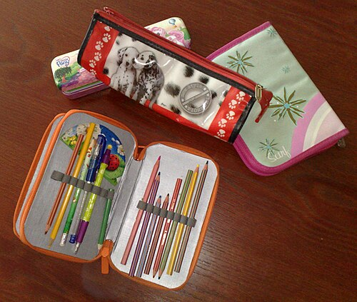
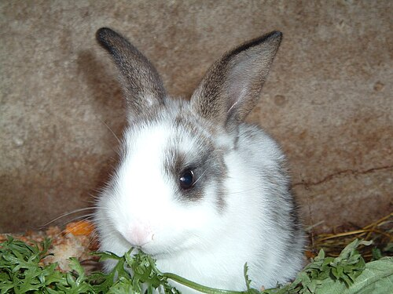

🟦 Term 1 — MCQ Mock Test 1
25 multiple‑choice questions. Write your letter (A/B/C/D) on paper first, then open the arrow to check.
▶ Click "Answer & explanation" under each question only after you've answered. It tells you what the question meant and gives the correct answer in English and Spanish.
Q1. What does Estoy contento mean?
- A) I am tired
- B) I am happy
- C) I am angry
- D) I am worried
▶ Answer & explanation
The question means: What does the Spanish sentence Estoy contento mean in English? ✅ Correct: B) I am happy
- 🇬🇧 I am happy
- 🇪🇸 Estoy contento (boy) / Estoy contenta (girl) — estoy is "I am" for feelings.
Q2. How do you say I am tired (if you are a girl)?
- A) Estoy cansado
- B) Estoy cansada
- C) Estoy enfadada
- D) Estoy contenta
▶ Answer & explanation
The question means: Choose the correct Spanish for "I am tired", spoken by a girl. ✅ Correct: B) Estoy cansada
- 🇬🇧 I am tired
- 🇪🇸 Estoy cansada — a girl uses the ‑a ending. A boy would say Estoy cansado.
Q3. Which word means but?
- A) porque
- B) y
- C) pero
- D) también
▶ Answer & explanation
The question means: Which Spanish word means "but"? ✅ Correct: C) pero
- 🇬🇧 but
- 🇪🇸 pero — Estoy bien pero cansado. (I'm fine but tired.) (porque = because, y = and)
Q4. ¿Cómo te llamas? is asking…
- A) How old are you?
- B) Where do you live?
- C) What is your name?
- D) How are you?
▶ Answer & explanation
The question means: What is the Spanish question ¿Cómo te llamas? asking you? ✅ Correct: C) What is your name?
- 🇬🇧 What are you called? / What is your name?
- 🇪🇸 You answer: Me llamo… (My name is…)
Q5. How do you say I am 12 years old?
- A) Soy doce años
- B) Tengo doce años
- C) Tengo doce
- D) Estoy doce años
▶ Answer & explanation
The question means: Choose the correct way to say your age in Spanish. ✅ Correct: B) Tengo doce años
- 🇬🇧 I am 12 years old
- 🇪🇸 Tengo doce años — in Spanish you have years (tengo = I have). Never use soy or estoy for age.
Q6. Which number is quince?
- A) 5
- B) 14
- C) 15
- D) 50
▶ Answer & explanation
The question means: What number is the Spanish word quince? ✅ Correct: C) 15
- 🇬🇧 fifteen
- 🇪🇸 quince = 15 (cinco = 5, catorce = 14)
Q7. Which is the Spanish for Wednesday?
- A) martes
- B) miércoles
- C) jueves
- D) viernes
▶ Answer & explanation
The question means: Which day of the week is "Wednesday" in Spanish? ✅ Correct: B) miércoles
- 🇬🇧 Wednesday
- 🇪🇸 miércoles (martes = Tuesday, jueves = Thursday, viernes = Friday)
Q8. Mi cumpleaños es el cinco de mayo. When is the birthday?
- A) 5th of March
- B) 5th of May
- C) 15th of May
- D) 9th of May
▶ Answer & explanation
The question means: Read the Spanish date and choose the correct one in English. ✅ Correct: B) 5th of May
- 🇬🇧 My birthday is the 5th of May
- 🇪🇸 el cinco de mayo — cinco = 5, mayo = May. (March = marzo.)
Q9. Look at the picture. What is it?

- A) la mochila
- B) el estuche
- C) la regla
- D) el libro
▶ Answer & explanation
The question means: Name this object in Spanish. ✅ Correct: B) el estuche
- 🇬🇧 pencil case
- 🇪🇸 el estuche — Tengo un estuche azul. (I have a blue pencil case.)
Q10. Which word means a pen?
- A) un lápiz
- B) una goma
- C) un bolígrafo
- D) una regla
▶ Answer & explanation
The question means: Which Spanish words mean "a pen"? ✅ Correct: C) un bolígrafo
- 🇬🇧 a pen
- 🇪🇸 un bolígrafo (often shortened to un boli). (un lápiz = a pencil, una goma = a rubber, una regla = a ruler)
Q11. What does una regla mean?
- A) a rubber
- B) a ruler
- C) a folder
- D) a book
▶ Answer & explanation
The question means: Translate una regla into English. ✅ Correct: B) a ruler
- 🇬🇧 a ruler
- 🇪🇸 una regla (una goma = a rubber, una carpeta = a folder, un libro = a book)
Q12. Choose the correct word for a in: ___ mochila (mochila is feminine).
- A) un
- B) una
- C) el
- D) unos
▶ Answer & explanation
The question means: Pick the right word for "a" before the feminine noun mochila. ✅ Correct: B) una
- 🇬🇧 a backpack
- 🇪🇸 una mochila — feminine nouns take una; masculine take un (un libro).
Q13. What colour is rojo?
- A) green
- B) blue
- C) red
- D) yellow
▶ Answer & explanation
The question means: What colour does rojo mean? ✅ Correct: C) red
- 🇬🇧 red
- 🇪🇸 rojo / roja (verde = green, azul = blue, amarillo = yellow)
Q14. How do you say a green book? (libro is masculine)
- A) un libro verde
- B) una libra verde
- C) un verde libro
- D) un libro verda
▶ Answer & explanation
The question means: Choose the correct phrase for "a green book". ✅ Correct: A) un libro verde
- 🇬🇧 a green book
- 🇪🇸 un libro verde — the colour comes after the noun, and verde doesn't change for masculine/feminine.
Q15. Which sentence means My backpack is new?
- A) Mi mochila es vieja
- B) Mi mochila es nueva
- C) Mi mochila es fea
- D) Mi mochila es útil
▶ Answer & explanation
The question means: Pick the Spanish for "My backpack is new". ✅ Correct: B) Mi mochila es nueva
- 🇬🇧 My backpack is new
- 🇪🇸 Mi mochila es nueva — mochila is feminine, so nuevo → nueva. (vieja = old, fea = ugly, útil = useful)
Q16. What does horroroso mean?
- A) cool
- B) useful
- C) rubbish / horrible
- D) new
▶ Answer & explanation
The question means: Translate the adjective horroroso. ✅ Correct: C) rubbish / horrible
- 🇬🇧 rubbish / horrible
- 🇪🇸 horroroso / horrorosa (chulo = cool, útil = useful, nuevo = new)
Q17. Look at the picture. Which pet is this?

- A) un gato
- B) un perro
- C) un conejo
- D) una tortuga
▶ Answer & explanation
The question means: Name this animal in Spanish. ✅ Correct: C) un conejo
- 🇬🇧 a rabbit
- 🇪🇸 un conejo (un gato = a cat, un perro = a dog, una tortuga = a tortoise)
Q18. Tengo un perro y dos gatos. How many pets in total?
- A) 1
- B) 2
- C) 3
- D) 4
▶ Answer & explanation
The question means: Read the sentence and count the pets. ✅ Correct: C) 3
- 🇬🇧 I have a dog and two cats → 1 + 2 = 3 pets.
- 🇪🇸 Tengo un perro y dos gatos.
Q19. Which word means sister?
- A) el hermano
- B) la hermana
- C) la madre
- D) el padre
▶ Answer & explanation
The question means: Which Spanish word means "sister"? ✅ Correct: B) la hermana
- 🇬🇧 sister
- 🇪🇸 la hermana (el hermano = brother, la madre = mother, el padre = father)
Q20. Tengo el pelo rubio. What does this mean?
- A) I have brown hair
- B) I have blond hair
- C) I have blue eyes
- D) I have long hair
▶ Answer & explanation
The question means: Translate Tengo el pelo rubio. ✅ Correct: B) I have blond hair
- 🇬🇧 I have blond hair
- 🇪🇸 Tengo el pelo rubio — pelo = hair, rubio = blond. (moreno = brown/dark, largo = long)
Q21. How do you say I have green eyes?
- A) Tengo el pelo verde
- B) Tengo los ojos verdes
- C) Tengo los ojos azules
- D) Soy verde
▶ Answer & explanation
The question means: Choose the Spanish for "I have green eyes". ✅ Correct: B) Tengo los ojos verdes
- 🇬🇧 I have green eyes
- 🇪🇸 Tengo los ojos verdes — ojos = eyes; the colour is plural (verdes) because there are two eyes.
Q22. What does Soy simpática mean (girl speaking)?
- A) I am lazy
- B) I am shy
- C) I am nice / friendly
- D) I am sporty
▶ Answer & explanation
The question means: Translate the personality sentence Soy simpática. ✅ Correct: C) I am nice / friendly
- 🇬🇧 I am nice / friendly
- 🇪🇸 Soy simpática — note soy (not estoy) is used for personality. (perezoso = lazy, tímido = shy, deportista = sporty)
Q23. Which is the odd one out (not a feeling)?
- A) triste
- B) nervioso
- C) preocupado
- D) bolígrafo
▶ Answer & explanation
The question means: Three words are feelings; one is not. Find the one that isn't. ✅ Correct: D) bolígrafo
- 🇬🇧 bolígrafo = a pen (a school object), not a feeling.
- 🇪🇸 triste = sad, nervioso = nervous, preocupado = worried are all feelings.
Q24. Choose the correct verb: ___ contento porque es mi cumpleaños.
- A) Soy
- B) Tengo
- C) Estoy
- D) Vivo
▶ Answer & explanation
The question means: Pick the right verb for "I am happy because it's my birthday." (a feeling) ✅ Correct: C) Estoy
- 🇬🇧 I am happy because it's my birthday
- 🇪🇸 Estoy contento porque es mi cumpleaños — feelings use estoy, not soy.
Q25. Mi gato es negro y blanco. What colours is the cat?
- A) brown and white
- B) black and grey
- C) black and white
- D) grey and white
▶ Answer & explanation
The question means: Read the sentence and choose the cat's colours. ✅ Correct: C) black and white
- 🇬🇧 My cat is black and white
- 🇪🇸 negro = black, blanco = white. (marrón = brown, gris = grey)
🏁 Your score: ____ / 25
- 22–25: ¡Excelente! 🌟 · 17–21: ¡Muy bien! · Under 17: re‑read the Term 1 guide and try again.
➡️ Next: Term 1 — MCQ Mock 2